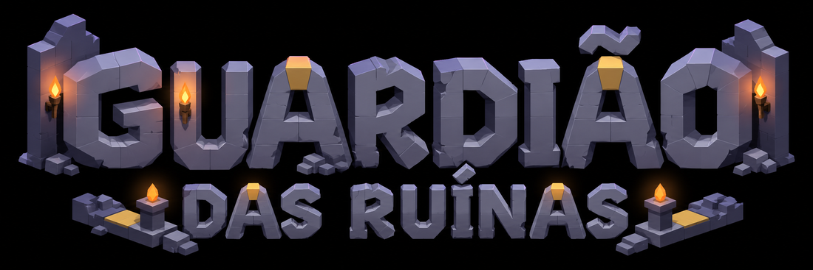

Erguendo as ruínas
| Mover | W A S D ou setas | Analógico |
| Estocada mágica | J | X |
| Corte pesado | K | Y |
| Giro | L | RB |
| Giro carregado | segure J e solte | segure X |
| Pular | Espaço | A |
| Rolar | Shift | B |
| Aparar | Q | LB |
| Interagir | E | RT |
| Pausar | Esc | Start |
A estocada dispara um raio que gasta mana; poções azuis repõem mana e as vermelhas, vida. Segure a estocada até a lâmina brilhar e solte para o giro carregado. Pule a onda de choque, role para atravessar golpes e apare o soco para deixar o inimigo aberto.
Jogo pausado